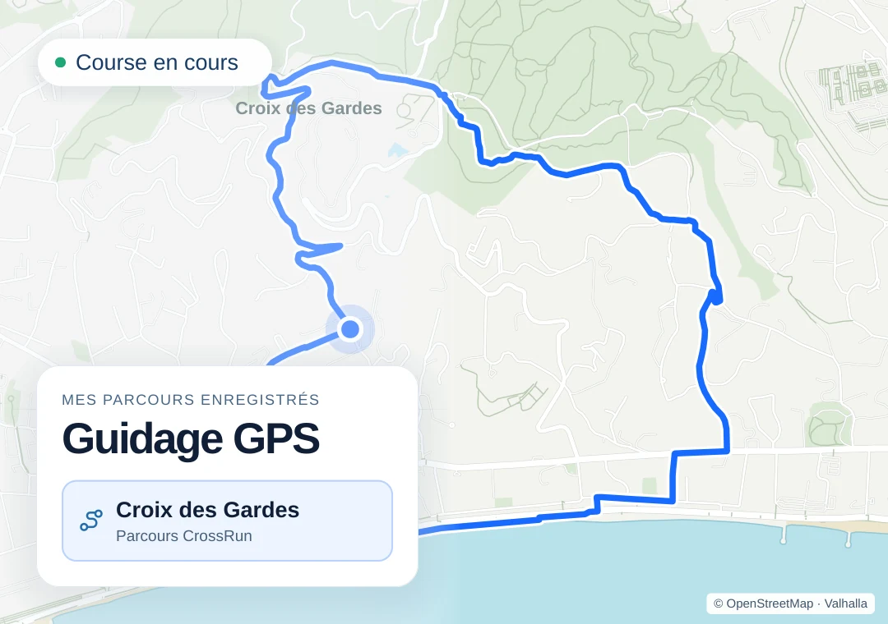
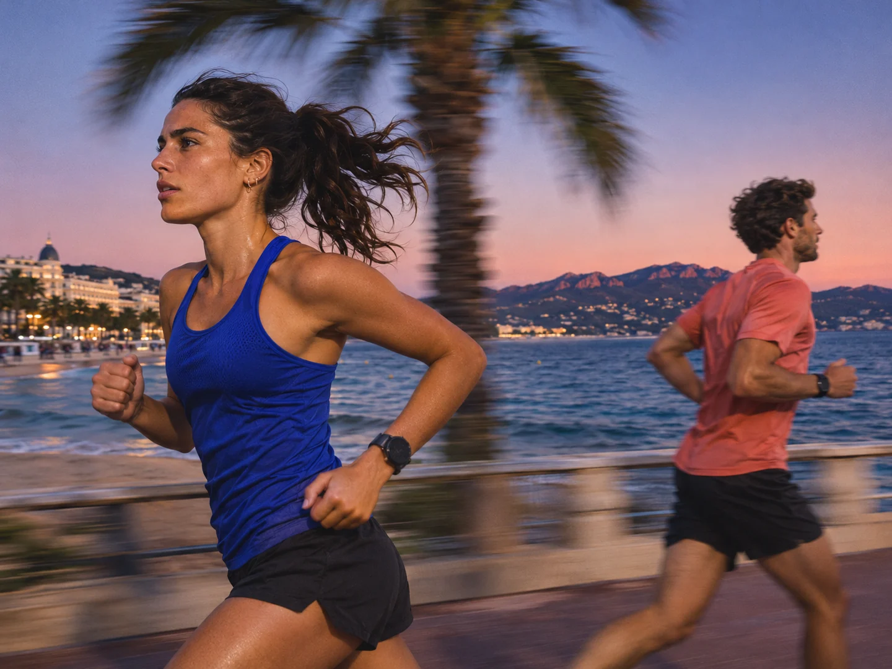
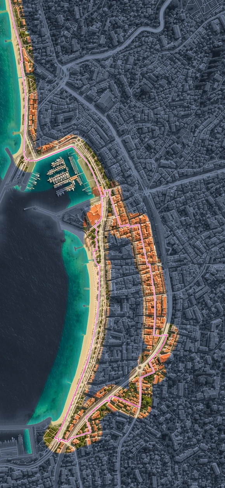
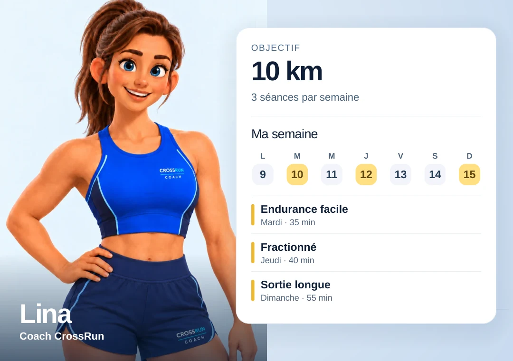
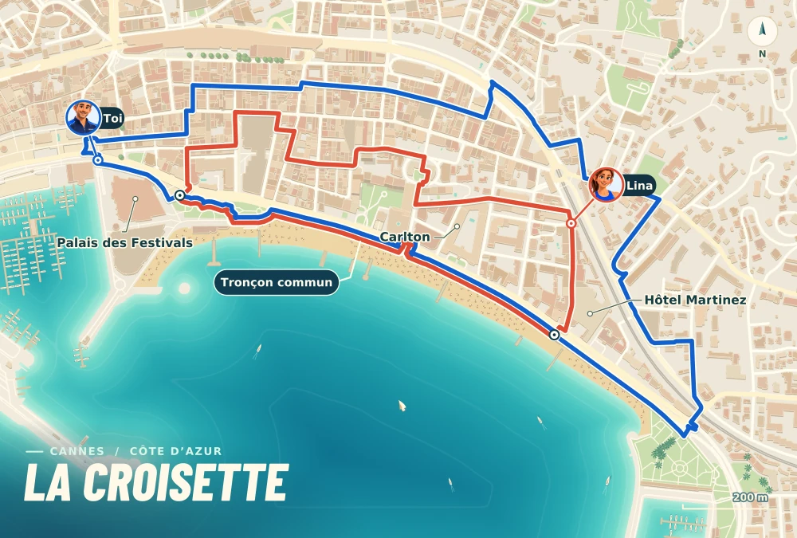

Guidage GPS
Trouve une boucle, trace ton parcours ou importe un GPX. Suis ensuite ton itinéraire pendant la sortie.

Application 100 % gratuite
Vos chemins se sont croisés ? Après la course, retrouve les runners qui ont partagé ton parcours et envoie-leur un Wave.
Bêta · 18 ans et plus
Enregistre tes runs, explore ta ville, relève des défis et retrouve les runners que tu as croisés. Tout dans une seule appli, 100 % gratuite.
Dans l’appli
Retrouve tes tracés sur la carte classique. En vue illustrée, prends de la hauteur sur Cannes. Les rues que tu as parcourues apparaissent en couleur, les quartiers à découvrir restent dans l’ombre.
Préparer ma prochaine sortie


Trouve une boucle, trace ton parcours ou importe un GPX. Suis ensuite ton itinéraire pendant la sortie.

Choisis une distance et tes jours de course. Retrouve tes séances dans le calendrier pour préparer ton objectif.
Art GPS · En bêta
Transforme une sortie en création. Imagine ton propre dessin sur la carte, prépare ton parcours sur les rues et chemins, puis réalise-le en courant.
Le croisement
Tu as croisé Lina sur la Croisette. Vous avez couru un kilomètre ensemble. Après ta sortie, CrossRun te montre où vos deux parcours se rejoignent.
Avec le mode filles, si tu le souhaites, seules les autres coureuses peuvent découvrir ton profil lors de nouveaux croisements. Tu peux activer cette option dès l’inscription ou dans tes réglages de confidentialité. Les contacts déjà acceptés gardent leur accès.

Démo interactive
Envie de la recroiser ? Envoie-lui un Wave. Si elle accepte, la conversation s’ouvre.
ToiSalut Lina ! Je retourne courir dimanche matin. Ça te dit qu’on fasse un tour ensemble ?
LinaAvec plaisir ! On se retrouve à 9 h sur la Croisette ?
Télécharger CrossRun